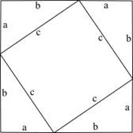

Виникнення найвідомішої теореми у світі - теореми Піфагора
10/09/2024 00:57

Теорема Піфагора – одна з найвідоміших геометричних теорем. І хоча всі знають, що саме каже саме формулювання теореми, багато хто нічого не знає про її історію.
Більшість науковців вважають, що теорема Піфагора була доведена
давньогрецьким математиком і філософом Піфагором. Проте є версія, що теорему знали й до його народження.
Доказом цього є те, що в Стародавньому Єгипті знали, що трикутник, в якого сторони мають 3 см,
4 см і 5 см, є прямокутним.
Про те, що квадрат гіпотенузи дорівнює сумі квадратів катетів, знали задовго до народження
Піфагора. Але саме він вважається першим ученим, який довів співвідношення сторін трикутника.
Немає ніяких вказівок на авторство теореми протягом п'яти століть після Піфагора. Однак такі автори,
як Плутарх або Цицерон, приписали теорему Піфагору у такий спосіб, ніби авторство було широко відоме і безсумнівне.
Відомо понад сто доведень теореми Піфагора. Найпопулярніший і найпростіший метод доведення
теореми пов'язаний з площами фігури.

Розташуємо чотири однакові прямокутні трикутники так, як це зображено на рисунку.
Чотирикутник зі сторонами c є квадратом, оскільки сума двох гострих кутів
90°, а розгорнутий кут — 180°.
Площа всієї фігури рівна, з одної сторони, площі квадрата зі стороною a+b, а з іншої — сумі
площ чотирьох трикутників і внутрішнього квадрата.
Тоді виходить, що (a+b)²=4*(a*b ⁄ 2)+c², a²+2ab+b²=2ab+c², a²+b²=c².
Автор: Олександр Дубчак
← Повернутися до новин